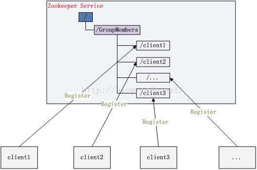
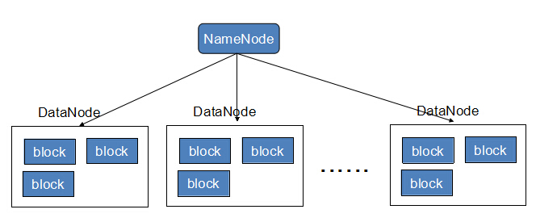

最近要做一些分布式计算框架的调研，来记录一下看的东西，以免忘记：
1.什么是分布式计算
分布式计算简单来说，是把一个大计算任务拆分成多个小计算任务分布到若干台机器上去计算，然后再进行结果汇总，目的在于分析计算海量的数据。海量计算最开始的方案是提高单机计算性能，如大型机，后来由于数据的爆发式增长、单机性能却跟不上，才有分布式计算这种妥协方案。因为计算一旦拆分，问题会变得非常复杂，像一致性、数据完整、通信、容灾、任务调度等问题也都来了。
举个例子，产品要求从数据库中100G的用户购买数据，分析出各地域的消费习惯金额等。如果没什么时间要求，通常我们就写个对应的业务处理服务程序，部署到服务器上，让它慢慢跑就是了，我们预计10个小时能处理完。但是后面客户嫌太慢，让想办法加快到半个小时，因此分布式计算产生了，平常开发中类似的需求也很多，总结出来就是，数据量大、单机计算慢，因此我们转向使用多台机器进行运算，现如今分布式计算框架主要有spark,storm,hadoop,AKKA.openshift不知道能不能做分布式，记忆中是结合docker用来做程序部署的.
先看看storm:
ApacheStorm是由Twitter开源的分布式实时计算系统。Storm可以非常容易并且可靠的处理无限的数据流。对比Hadoop的批处理，Storm是一个实时的、分布式的、具备高容错的计算系统。Storm应用可以使用不同的编程语言来进行开发。
具有如下好处：
易于扩展。对于扩展，你只需要添加机器和改变对应的topology（拓扑）设置。Storm使用Hadoop Zookeeper进行集群协调，这样可以充分的保证大型集群的良好运行。
1.每条信息的处理都可以得到保证。
2.Storm集群管理简易。
3.Storm的容错机能：一旦topology递交，Storm会一直运行它直到topology被废除或者被关闭。而在执行中出现错误时，也会由Storm重新分配任务。
4.尽管通常使用Java，Storm中的topology可以用任何语言设计。
Nimbus和Supervisor之间的通信依靠Zookeeper来完成，并且Nimbus进程和Supervisor都是快速失败和无状态的.我的理解是如果挂了可以重启，它们可以继续工作。
storm里面有一些核心基本概念：包括Topology、Nimbus、Supervisor、Worker、Executor、Task、Spout、Bolt、Tuple、Stream、Stream分组（grouping）等。
Topology：一个实时计算应用程序逻辑上被封装在Topology对象中，类似Hadoop中的作业。与作业不同的是，Topology会一直运行直到显式地杀死它。
Nimbus：负责资源分配和任务调度。
Supervisor：负责接受Nimbus分配的任务，启动和停止属于自己管理的Worker进程。
Worker：运行具体处理组件逻辑的进程。
Executor：Storm0.8之后，Executor为Worker进程中的具体的物理线程，同一个Spout/Bolt的Task可能会共享一个物理线程，一个Executor中只能运行隶属于同一个Spout/Bolt的Task。
Task：每一个Spout/Bolt具体要做的工作，也是各个节点之间进行分组的单位。
Spout：在Topology中产生源数据流的组件。通常Spout获取数据源的数据，然后调用nextTuple函数，发射数据供Bolt消费。
Bolt：在Topology中接受Spout的数据然后执行处理的组件，Bolt可以执行过滤，函数操作，合并，写数据库等任何操作。Bolt在接收到消息后会调用execute函数，用户可在其中执行自己想要的操作，bolt可以订阅多个由spout或者其他bolt发射的数据流，这样就可以建立复杂的数据流转换网络。
Tuple：消息传递的单元。
Stream：源源不断传递的Tuple组成了Stream。
Stream分组：即消息的分区（partition）方法。Storm中提供若干种实用的分组方式。包括Shuffle、Fields、All、Global、None、Direct、Localorshuffle等。
Storm有7种内置的分组方式，也可以通过实现CustomStreamGrouping接口来定义自己的分组。
（1）Shuffle分组：Task中的数据随机分配，可以保证同一级Bolt上的每个Task处理的Tuple数量一致。
（2）Fields分组：根据Tuple中的某一个Filed或者多个Filed的值来划分。比如Stream根据user-id的值来分组，具有相同的user-id值的Tuple会被分发到相同的Task中。
（3）All分组：所有的Tuple都会分发到所有的Task上。
（4）Global分组：整个Stream会选择一个Task作为分发的目的地，通常是具有最新ID的Task。
（5）None分组：也就是你不关心如何在Task中做Stream的分发，目前等同于Shuffle分组。
（6）Direct分组：这是一种特殊的分组方式，也就是产生数据的Spout/Bolt自己明确决定这个Tuple被Bolt的哪些Task所消费。如果Direct分组，需要使用OutputCollector的emitDirect方法来实现。
（7）Localorshuffle分组：如果目标Bolt中的一个或者多个Task和当前产生数据的Task在同一个Worker进程中，那么就走内部的线程间通信，将Tuple直接发给在当前Worker进程中的目的Task。否则，同Shuffle分组
storm运行的数据流转换网络Topology可以如下图进行理解：
Topology：在这个Topology中，我们看到Spout和Bolt。在Topology中，我们将Spout和Bolt称之为组件(Components)。一个Topology中，必须同时存在Spout和Bolt，Spout和Bolt数量可以随意，Topology的组件目前只有Spout和Bolt，没有其他组件。
Stream：我们已经知道Spout是从外部数据源中获取数据，以一定的格式将数据传递给Bolt处理。从Spout中源源不断的给Bolt传递数据，形成的这个数据通道我们称之为Stream(流)。因为Strom是一个实时计算的流式处理框架，其不是像hadoop那样，一次性处理一大批的数据(批处理)，以及spark一次性处理一个batch的数据，Storm是不断从外部数据源中获取最新的数据，然后将新的数据传递给Bolt处理(增量处理)。这样不断的获取与传输就形成了这个数据流通道就称之为Stream，因此实时性很高。而Stream传输的最小单位Tuple是有数据格式的，在同一个流中,Tuple的数据格式应该都是一样的；不同流中的数据格式可能相同，也可能不同。
DAG(有向无环图):在storm中，spout和bolt、bolt与bolt之间的数据流向，将整合topology串起来了。topology是DAG即有向无环图，意思就是数据流是有方向的，但是不能形成一个环状。如果形成了一个环状，那么意味着Bolt中的数据还可能传给Spout，spout又要传递给Bolt。这就形成了一个死循环，Stream中的一个数据(Tuple)永远也没办法处理完。
以上看出storm的一些特性，其中实时性很高决定了我们不能选用一般的例如数据库直接读取等数据源，关于数据源的选择：
1、实时性
Storm是一个实时计算框架。其不能一次性获取所有的数据，进行分析处理。而是Spout不断的从外部数据源中获取最新的数据，然后交给Bolt处理。这意味着，Spout必须要不断的检测外部数据源有没有最新的数据，如果有新数据了，就获取到最新的数据，然后交给Bolt处理。
2、容错
而且还必须要考虑的是，如果一条数据处理失败了，Spout必须还能再次获取这条数据，否则计算出的结果的误差就会比较大。
3、数据路由
同时一个Topology中可能会有多个Spout来从外部数据源中获取数据，假设我们有SPOUTA、SPOUTB、SPOUTC，那么某些业务场景下，我们可能希望同一条数据，SPOUTA、SPOUTB、SPOUTC都能获取到。在另外一些业务场景下，可能只希望SPOUTA获取到这条数据。如果数据源不支持路由，意味着，对于不同Topology，需要开发不同的数据获取机制。
而对于这些需求，现有的JMS消息机制，可以满足这个条件。主流的消息中间件，如Kafka、RocketMq等。因此如果要使用strom，需要配合消息中间件使用，也有人会直接使用socket编程实现storm的数据接入，这种数据接入方式比较简单，维护成本较低，但数据量相对于使用消息中间件来说较小。使用Socket采集数据比较麻烦的是，由于Storm的Spout的地址是不定的，无法确定其地址，则前端业务系统就无法将数据准确的发送的某个具体IP地址上的端口中。网上的解决方法如下：
(1) 我们可以使用zookeeper作为传输站，Spout执行后，将本地有效的IP地址及可用正在监控的端口等信息写入zookeeper中，前端业务系统从zookeeper目录中获取该信息。
(2) 使用元数据指导前端业务系统数据发送，Spout将本地IP及端口信息存入元数据管理器中，前端业务系统从元数据管理器中获取该参数信息。
4.数据落地层：
(1)同样使用消息中间件，将处理后的数据写入消息中间件之中，后端业务系统再从消息中间件中获取数据。
(2)数据库
传统数据库与Storm的接口差不多都相似。一般情况下，数据量不是非常大的情况下可以使用数据库作为数据落地的存储对象。数据库对数据后续处理也是比较方便的，且网络上对数据库的操作也是比较多的，在开发上代价比较小，适合中小量数据存储。
(3)HDFS
HDFS及基于Hadoop的分布式文件系统。许多日志分析系统都是基于HDFS搭建出来的，所以开发Storm与HDFS的数据落地接口将很有必要。例如将大批量数据实时处理之后存入Hive中，提供给后端业务系统进行处理，例如日志分析，数据挖掘等等。
Storm的容错机制
1Worker进程死亡
当仅有Worker进程死亡时，其主机上的Supervisor会尝试重启Worker进程，如果连续重启都失败，当超过一定的失败次数之后，Nimbus会在其他主机上重启Worker。
当Supervisor死亡时，如果某个主机上的Worker死亡了，由于没有Supervisor，所以无法在本机重启Worker，但会在其他主机上重启Worker，当Supervisor重启以后，会将本机的Worker重启，而之间在其他主机上重启的Worker则会消失，例如之前node2有三个Worker，node3有三个Worker，当node2的Supervisor死亡并且kill掉一个Worker之后，node3出现四个Worker，重启node2的Supervisor之后，node2会重启一个Worker，恢复成三个Worker，node3kill掉多余的一个Worker，也恢复成三个Worker。
当Nimbus死亡时，Worker也会继续执行，但是某个Worker死亡时不会像Supervisor死亡时安排到其他主机上执行，因此如果Worker全部死亡，则任务执行失败。
集群中的Worker是均匀分配到各节点上的，例如一个作业有三个Worker时，会在一个节点（例如node2）分配两个Worker，在一个节点（例如node3）分配一个Worker，当再启动一个需要三个Worker的作业时，会在node2分配一个Worker，在node3分配两个Worker。
2 Nimbus或者Supervisor进程死亡
Nimbus和Supervisor被设计成是快速失败且无状态的，他们的状态都保存在ZooKeeper或者磁盘上，如果这两个进程死亡，它们不会像Worker一样自动重启，但是集群上的作业仍然可以在Worker中运行，并且他们重启之后会像什么都没发生一样正常工作。
3ZooKeeper停止
ZooKeeper的停止同样不会影响已有的作业运行，此时kill掉Worker以后过段时间仍会在本机重启一个Worker。
综上所述，只有Nimbus失败并且所有Worker都失败之后才会影响集群上的作业运行，除此之外Storm集群的容错机制可以保证作业运行的可靠性。
对于storm的理解，在网上找了一个例子，用storm来进行分词，代码如下（亲测可运行）：
新建类SentenceSpout.java（数据流生成者）1
2
3
4
5
6
7
8
9
10
11
12
13
14
15
16
17
18
19
20
21
22
23
24
25
26
27
28
29
30
31
32
33
34
35
36
37
38
39
40
41
42
43
44
45
46
47
48
49
50
51
52
53
54
55
56
57
58
59
60
61
62
63
64
65
66
67
68
69
70importjava.util.Map;
importorg.apache.storm.spout.SpoutOutputCollector;
importorg.apache.storm.task.TopologyContext;
importorg.apache.storm.topology.OutputFieldsDeclarer;
importorg.apache.storm.topology.base.BaseRichSpout;
importorg.apache.storm.tuple.Fields;
importorg.apache.storm.tuple.Values;
importorg.apache.storm.utils.Utils;
/**
*向后端发射tuple数据流
*@authorsoul
*
*/
public class SentenceSpout extends BaseRichSpout{
//BaseRichSpout是ISpout接口和IComponent接口的简单实现，接口对用不到的方法提供了默认的实现
private SpoutOutputCollectorcollector;
private String[] sentences={
"mynameissoul",
"imaboy",
"ihaveadog",
"mydoghasfleas",
"mygirlfriendisbeautiful"
};
privateintindex=0;
/**
*open()方法中是ISpout接口中定义，在Spout组件初始化时被调用。
*open()接受三个参数:一个包含Storm配置的Map,一个TopologyContext对象，
提供了topology中组件的信息,SpoutOutputCollector对象提供发射tuple的方法。
*在这个例子中,我们不需要执行初始化,只是简单的存储在一个SpoutOutputCollector实例变量。
*/
public void open(Mapconf,TopologyContextcontext,SpoutOutputCollectorcollector){
//TODOAuto-generatedmethodstub
this.collector=collector;
}
/**
*nextTuple()方法是任何Spout实现的核心。
*Storm调用这个方法，向输出的collector发出tuple。
*在这里,我们只是发出当前索引的句子，并增加该索引准备发射下一个句子。
*/
public void nextTuple(){
//collector.emit(newValues("helloworldthisisatest"));
//TODOAuto-generatedmethodstub
this.collector.emit(newValues(sentences[index]));
index++;
if(index>=sentences.length){
index=0;
}
Utils.sleep(1);
}
/**
*declareOutputFields是在IComponent接口中定义的，所有Storm的组件（spout和bolt）都必须实现这个接口
*用于告诉Storm流组件将会发出那些数据流，每个流的tuple将包含的字段
*/
public void declareOutputFields(OutputFieldsDeclarerdeclarer){
//TODOAuto-generatedmethodstub
declarer.declare(newFields("sentence"));//告诉组件发出数据流包含sentence字段
}
}
新建类SplitSentenceBolt.java（单词分割器）1
2
3
4
5
6
7
8
9
10
11
12
13
14
15
16
17
18
19
20
21
22
23
24
25
26
27
28
29
30
31
32
33
34
35
36
37
38
39
40
41
42
43
44
45
46
47
48
49
50
51
52
53
54
55
56
57importjava.util.Map;
importorg.apache.storm.task.OutputCollector;
importorg.apache.storm.task.TopologyContext;
importorg.apache.storm.topology.OutputFieldsDeclarer;
importorg.apache.storm.topology.base.BaseRichBolt;
importorg.apache.storm.tuple.Fields;
importorg.apache.storm.tuple.Tuple;
importorg.apache.storm.tuple.Values;
/**
*订阅sentencespout发射的tuple流，实现分割单词
*@authorsoul
*
*/
publicclassSplitSentenceBoltextendsBaseRichBolt{
//BaseRichBolt是IComponent和IBolt接口的实现
//继承这个类，就不用去实现本例不关心的方法
private OutputCollectorcollector;
/**
*prepare()方法类似于ISpout的open()方法。
*这个方法在blot初始化时调用，可以用来准备bolt用到的资源,比如数据库连接。
*本例子和SentenceSpout类一样,SplitSentenceBolt类不需要太多额外的初始化,
*所以prepare()方法只保存OutputCollector对象的引用。
*/
public void prepare(MapstormConf,TopologyContextcontext,OutputCollectorcollector){
//TODOAuto-generatedmethodstub
this.collector=collector;
}
/**
*SplitSentenceBolt核心功能是在类IBolt定义execute()方法，这个方法是IBolt接口中定义。
*每次Bolt从流接收一个订阅的tuple，都会调用这个方法。
*本例中,收到的元组中查找“sentence”的值,
*并将该值拆分成单个的词,然后按单词发出新的tuple。
*/
public void execute(Tupleinput){
//TODOAuto-generatedmethodstub
Stringsentence=input.getStringByField("sentence");
String[]words=sentence.split("");
for(Stringword:words){
this.collector.emit(newValues(word));//向下一个bolt发射数据
}
}
/**
*plitSentenceBolt类定义一个元组流,每个包含一个字段(“word”)。
*/
public void declareOutputFields(OutputFieldsDeclarerdeclarer){
//TODOAuto-generatedmethodstub
declarer.declare(newFields("word"));
}
}
新建类WordCountBolt.java（单词计数器）1
2
3
4
5
6
7
8
9
10
11
12
13
14
15
16
17
18
19
20
21
22
23
24
25
26
27
28
29
30
31
32
33
34
35
36
37
38
39
40
41
42
43
44
45
46
47
48
49
50
51
52
53
54
55
56
57
58
59
60
61
62
63
64
65importjava.util.HashMap;
importjava.util.Map;
importorg.apache.storm.task.OutputCollector;
importorg.apache.storm.task.TopologyContext;
importorg.apache.storm.topology.OutputFieldsDeclarer;
importorg.apache.storm.topology.base.BaseRichBolt;
importorg.apache.storm.tuple.Fields;
importorg.apache.storm.tuple.Tuple;
importorg.apache.storm.tuple.Values;
/**
*订阅splitsentencebolt的输出流，实现单词计数，并发送当前计数给下一个bolt
*@authorsoul
*
*/
public class WordCountBolt extends BaseRichBolt{
private OutputCollectorcollector;
//存储单词和对应的计数
private HashMap<String,Long> counts=null;//注：不可序列化对象需在prepare中实例化
/**
*大部分实例变量通常是在prepare()中进行实例化，这个设计模式是由topology的部署方式决定的
*因为在部署拓扑时,组件spout和bolt是在网络上发送的序列化的实例变量。
*如果spout或bolt有任何non-serializable实例变量在序列化之前被实例化(例如,在构造函数中创建)
*会抛出NotSerializableException并且拓扑将无法发布。
*本例中因为HashMap是可序列化的,所以可以安全地在构造函数中实例化。
*但是，通常情况下最好是在构造函数中对基本数据类型和可序列化的对象进行复制和实例化
*而在prepare()方法中对不可序列化的对象进行实例化。
*/
public void prepare(MapstormConf,TopologyContextcontext,OutputCollectorcollector){
//TODOAuto-generatedmethodstub
this.collector=collector;
this.counts=newHashMap<String,Long>();
}
/**
*在execute()方法中,我们查找的收到的单词的计数(如果不存在，初始化为0)
*然后增加计数并存储,发出一个新的词和当前计数组成的二元组。
*发射计数作为流允许拓扑的其他bolt订阅和执行额外的处理。
*/
public void execute(Tupleinput){
//TODOAuto-generatedmethodstub
Stringword=input.getStringByField("word");
Longcount=this.counts.get(word);
if(count==null){
count=0L;//如果不存在，初始化为0
}
count++;//增加计数
this.counts.put(word,count);//存储计数
this.collector.emit(newValues(word,count));
}
/**
*
*/
public void declareOutputFields(OutputFieldsDeclarerdeclarer){
//TODOAuto-generatedmethodstub
//声明一个输出流，其中tuple包括了单词和对应的计数，向后发射
//其他bolt可以订阅这个数据流进一步处理
declarer.declare(newFields("word","count"));
}
}
新建类ReportBolt.java（报告生成器）
1 | importjava.util.ArrayList; |
修改程序主入口App.java1
2
3
4
5
6
7
8
9
10
11
12
13
14
15
16
17
18
19
20
21
22
23
24
25
26
27
28
29
30
31
32
33
34
35
36
37
38
39
40
41
42
43
44
45
46
47
48
49
50
51
52
53
54
55
56
57
58
59
60
61
62
63
64
65
66
67
68
69
70
71
72
73
74
75
76importorg.apache.storm.Config;
importorg.apache.storm.LocalCluster;
importorg.apache.storm.topology.TopologyBuilder;
importorg.apache.storm.tuple.Fields;
importorg.apache.storm.utils.Utils;
/**
*实现单词计数topology
*
*/
publicclassApp
{
privatestaticfinalStringSENTENCE_SPOUT_ID="sentence-spout";
privatestaticfinalStringSPLIT_BOLT_ID="split-bolt";
privatestaticfinalStringCOUNT_BOLT_ID="count-bolt";
privatestaticfinalStringREPORT_BOLT_ID="report-bolt";
privatestaticfinalStringTOPOLOGY_NAME="word-count-topology";
public static void main(String[]args)//throwsException
{
//System.out.println("HelloWorld!");
//实例化spout和bolt
SentenceSpoutspout=newSentenceSpout();
SplitSentenceBoltsplitBolt=newSplitSentenceBolt();
WordCountBoltcountBolt=newWordCountBolt();
ReportBoltreportBolt=newReportBolt();
TopologyBuilderbuilder=newTopologyBuilder();//创建了一个TopologyBuilder实例
//TopologyBuilder提供流式风格的API来定义topology组件之间的数据流
//builder.setSpout(SENTENCE_SPOUT_ID,spout);//注册一个sentencespout
//设置两个Executeor(线程)，默认一个
builder.setSpout(SENTENCE_SPOUT_ID,spout,2);
//SentenceSpout-->SplitSentenceBolt
//注册一个bolt并订阅sentence发射出的数据流，
//shuffleGrouping方法告诉Storm要将SentenceSpout发射的tuple随机均匀的分发给SplitSentenceBolt的实例
//builder.setBolt(SPLIT_BOLT_ID,splitBolt).shuffleGrouping(SENTENCE_SPOUT_ID);
//SplitSentenceBolt单词分割器设置4个Task，2个Executeor(线程)
builder.setBolt(SPLIT_BOLT_ID,splitBolt,2).setNumTasks(4).shuffleGrouping(SENTENCE_SPOUT_ID);
//SplitSentenceBolt-->WordCountBolt
//fieldsGrouping将含有特定数据的tuple路由到特殊的bolt实例中
//这里fieldsGrouping()方法保证所有“word”字段相同的tuuple会被路由到同一个WordCountBolt实例中
//builder.setBolt(COUNT_BOLT_ID,countBolt).fieldsGrouping(SPLIT_BOLT_ID,newFields("word"));
//WordCountBolt单词计数器设置4个Executeor(线程)
builder.setBolt(COUNT_BOLT_ID,countBolt,4).fieldsGrouping(SPLIT_BOLT_ID,newFields("word"));
//WordCountBolt-->ReportBolt
//globalGrouping是把WordCountBolt发射的所有tuple路由到唯一的ReportBolt
builder.setBolt(REPORT_BOLT_ID,reportBolt).globalGrouping(COUNT_BOLT_ID);
Configconfig=newConfig();
//Config类是一个HashMap<String,Object>的子类，用来配置topology运行时的行为
//设置worker数量
//config.setNumWorkers(2);
LocalClustercluster=newLocalCluster();
//本地提交
cluster.submitTopology(TOPOLOGY_NAME,config,builder.createTopology());
Utils.sleep(10000);
cluster.killTopology(TOPOLOGY_NAME);
cluster.shutdown();
}
}
参考资料：
http://storm.apache.org/about/integrates.html
https://www.cnblogs.com/langtianya/p/5199529.html
https://blog.csdn.net/uisoul/article/details/77990260
https://blog.csdn.net/uisoul/article/details/77989927
https://blog.csdn.net/CSDN_WANGQI/article/details/53306603
https://blog.csdn.net/csdn_wangqi/article/details/53317095
https://blog.csdn.net/qq_37095882/article/category/7055953
https://blog.csdn.net/cuihaolong/article/details/52652686
https://www.jianshu.com/p/7e5fc624861b
https://blog.csdn.net/blogchong/article/details/41478357
ZooKeeper
1.ZooKeeper是什么？
ZooKeeper是一个分布式的，开放源码的分布式应用程序协调服务，是Google的Chubby一个开源的实现，它是集群的管理者，监视着集群中各个节点的状态根据节点提交的反馈进行下一步合理操作。它包括了文件系统和通知机制。
Zookeeper是一个基于观察者模式设计的分布式服务管理框架，负责存储和管理相关数据，接收观察者的注册。一旦这些数据的状态发生变化，zookeeper就负责通知那些已经在zookeeper集群进行注册并关心这些状态发生变化的观察者，以便观察者执行相关操作。
Zookeeper使用的数据结构为树形结构，根节点为”/“。Zookeeper集群中的节点，根据其身份特性分为leader、follower、observer。leader负责客户端writer类型的请求；follower负责客户端reader类型的请求，并参与leader选举；observer是特殊的follower，可以接收客户端reader请求，但是不会参与选举，可以用来扩容系统支撑能力，提高读取速度。
Zookeeper与客户端：
zookeeper有如下特征：
1.最终一致性：client不论连接到哪个Server，展示给它都是同一个视图，这是zookeeper最重要的性能。
2.可靠性：具有简单、健壮、良好的性能，如果消息被到一台服务器接受，那么它将被所有的服务器接受。
3.实时性：Zookeeper保证客户端将在一个时间间隔范围内获得服务器的更新信息，或者服务器失效的信息。但由于网络延时等原因，Zookeeper不能保证两个客户端能同时得到刚更新的数据，如果需要最新数据，应该在读数据之前调用sync()接口。
4.等待无关（wait-free）：慢的或者失效的client不得干预快速的client的请求，使得每个client都能有效的等待。
5.原子性：更新只能成功或者失败，没有中间状态。
6.顺序性：包括全局有序和偏序两种：全局有序是指如果在一台服务器上消息a在消息b前发布，则在所有Server上消息a都将在消息b前被发布；偏序是指如果一个消息b在消息a后被同一个发送者发布，a必将排在b前面。
2.ZooKeeper可以用来干什么？
1.配置管理
比如我在搭建hadoop的HDFS的时候，需要在一个主机器上（Master节点）配置好HDFS需要的各种配置文件，然后通过scp命令把这些配置文件拷贝到其他节点上，这样各个机器拿到的配置信息是一致的，才能成功运行起来HDFS服务。Zookeeper提供了这样的一种服务：一种集中管理配置的方法，我们在这个集中的地方修改了配置，所有对这个配置感兴趣的都可以获得变更。这样就省去手动拷贝配置了，还保证了可靠和一致性。
2.分布式锁
单机程序的各个进程需要对互斥资源进行访问时需要加锁，那分布式程序分布在各个主机上的进程对互斥资源进行访问时也需要加锁。很多分布式系统有多个可服务的窗口，但是在某个时刻只让一个服务去干活，当这台服务出问题的时候锁释放，立即fail over到另外的服务。在ZooKeeper中叫Leader Election(leader选举)。
3.集群管理
在分布式的集群中，经常会由于各种原因，比如硬件故障，软件故障，网络问题，有些节点会进进出出。有新的节点加入进来，也有老的节点退出集群。这个时候，集群中有些机器（比如Master节点）需要感知到这种变化，然后根据这种变化做出对应的决策。例如HDFS中namenode是通过datanode的心跳机制来实现上述感知的，storm也是应用了类似的心跳机制来进行检测。
例如：所有机器约定在父目录GroupMembers下创建临时目录节点，然后监听父目录节点的子节点变化消息。一旦有机器挂掉，该机器与 zookeeper的连接断开，其所创建的临时目录节点被删除，所有其他机器都收到通知：某个兄弟目录被删除。
新机器加入也是类似，所有机器收到通知：新兄弟目录加入，highcount又有了，对于第二点，我们稍微改变一下，所有机器创建临时顺序编号目录节点，每次选取编号最小的机器作为master就好。

Storm的所有的状态信息都保存在Zookeeper里面，nimbus通过在zookeeper上面写状态信息来分配任务:
使得nimbus可以监控整个storm集群的状态，从而可以重启一些挂掉的task。 ZooKeeper使得整个storm集群十分的健壮-—任何一台工作机器挂掉都没有关系，只要重启然后从zookeeper上面重新获取状态信息就可以了
ZooKeeper搭建参考资料：
https://blog.csdn.net/qiushisoftware/article/details/79043379
https://www.cnblogs.com/felixzh/p/5869212.html
https://blog.csdn.net/xuxiuning/article/details/51218941
https://blog.csdn.net/shichen2010/article/details/50275473
https://blog.csdn.net/daiyutage/article/details/52049519
https://www.cnblogs.com/hzorac/p/5570721.html
Hadoop
Hadoop核心就是HDFS和MapReduce。要想了解Hadoop，就必须知道HDFS和MapReduce是什么。
HDFS（HadoopDistributedFileSystem，Hadoop分布式文件系统）
它是一个高度容错性的系统，适合部署在廉价的机器上。HDFS能提供高吞吐量的数据访问，适合那些有着超大数据集（largedataset）的应用程序。
HDFS的关键元素：
Block：将一个文件进行分块，通常是64M。
NameNode：保存整个文件系统的目录信息、文件信息及分块信息，这是由唯一一台主机专门保存，当然这台主机如果出错，NameNode就失效了。在Hadoop2.*开始支持activity-standy模式—-如果主NameNode失效，启动备用主机运行NameNode。
DataNode：分布在廉价的计算机上，用于存储Block块文件。

MapReduce
通俗说MapReduce是一套从海量源数据提取分析元素最后返回结果集的编程模型，将文件分布式存储到硬盘是第一步，然后从海量数据中提取分析。
和HDFS一样，MapReduce也是采用Master/Slave的架构，其架构图如下所示：
JobTracker：即Master，用于管理所有作业，将作业分解成一系列任务，并将任务指派给TaskTracker，主要用于任务监控，错误处理等。
TaskTrackers：Slave，用于运行MapTask和ReduceTask，执行JobTracker命令，汇报任务状态。
MapTask：Map引擎，解析每条数据记录，传递给用户编写的map()函数，将map()输出数据写入磁盘或者HDFS
ReduceTask:从MapTask上远程读取输入数据，对数据排序，将数据分组传递给用户编写的reduce()
MapResuce运行流程：
MapReduce的特点
1、易于编程：
MapReduce提供了一种抽象机制将程序员与系统层细节隔离开来，程序员仅需描述需要计算什么(whattocompute),而具体怎么去做(howtocompute)就交由系统的执行框架处理，这样程序员可从系统层细节中解放出来，而致力于其应用本身计算问题的算法设计。
例如软件工程实践指南中，专业程序员认为之所以写程序困难，是因为程序员需要记住太多的编程细节(从变量名到复杂算法的边界情况处理)，这对大脑记忆是一个巨大的认知负担,需要高度集中注意力而并行程序编写有更多困难，如需要考虑多线程中诸如同步等复杂繁琐的细节，由于并发执行中的不可预测性，程序的调试查错也十分困难；大规模数据处理时程序员需要考虑诸如数据分布存储管理、数据分发、数据通信和同步、计算结果收集等诸多细节问题。
2、良好的扩展性
当你的计算资源不能得到满足的时候，你可以通过简单的增加机器来扩展它的计算能力。
3、高容错性:
MapReduce设计的初衷就是使程序能够部署在廉价的PC机器上，这就要求它具有很高的容错性。比如其中一台机器挂了，它可以把上面的计算任务转移到另外一个节点上面上运行，不至于这个任务运行失败，而且这个过程不需要人工参与，而完全是由Hadoop内部完成的。
4、PB级以上海量数据的离线处理
这里加上离线处理，说明它适合离线处理而不适合在线处理。比如像毫秒级别的返回一个结果，MapReduce很难做到。
缺点（不善长方面）：
1、实时计算
像MySQL一样，在毫秒级或者秒级内返回结果
2、流式计算
MapReduce的输入数据集是静态的，不能动态变化
MapReduce自身的设计特点决定了数据源必须是静态的
3、DAG计算
多个应用程序存在依赖关系，后一个应用程序的输入为前一个的输出
也就是说用MapReduce来处理的数据集（或任务）必须具备这样的特点：
待处理的数据集可以分解成许多小的数据集，而且每一个小数据集都可以完全并行地进行处理。
简单了解，主要看spark,storm等现阶段实时性较高的分布式计算框架。
参考资料：
http://hadoop.apache.org/
https://blog.csdn.net/zhangliangzi/article/details/52071218
https://blog.csdn.net/u013850277/article/details/59792145
https://blog.csdn.net/jiangyu1013/article/details/72644098
https://blog.csdn.net/yywusuoweile/article/details/47678897
https://www.zhihu.com/search?q=hadoop&type=content
再来看看spark
1.1什么是Spark?
ApacheSpark则是UCBerkeleyAMPlab(加州大学伯克利分校AMP实验室)所开源的类HadoopMapReduce的通用并行框架,专门用于大数据量下的迭代式计算
1.2Spark比Hadoop对比
Spark开发是为了跟Hadoop配合的,不是为了取代Hadoop,Spark运算比Hadoop的MapReduce框架快的原因是因为Hadoop在一次Map运算之后,会将数据的运算结果从内存写入到磁盘中,第二次Reduce运算时在从磁盘中读取数据,所以其瓶颈在2次运算间的多余IO消耗.Spark将数据一直缓存在内存中,直到计算得到最后的结果,再将结果写入到磁盘,所以多次运算的情况下,Spark是比较快的.其优化了迭代式工作负载.
在网上有找到这样的对比总结：
Spark的主要特点还包括:
(1)提供Cache机制来支持需要反复迭代计算或者多次数据共享,减少数据读取的IO开销;
(2)提供了一套支持DAG图的分布式并行计算的编程框架,减少多次计算之间中间结果写到Hdfs的开销;
(3)使用多线程池模型减少Task启动开稍,shuffle过程中避免不必要的sort操作并减少磁盘IO操作。(Hadoop的Map和reduce之间的shuffle需要sort)
通过以上几个点看出，其实和storm进行对比分析，相同点是都是使用了DAG，并且可以反复迭代计算，都可以启用多进程进而建立多线程进行并行运算，但是storm因为是流式计算不能存储中间结果，需要一些消息中间件来配合使用。具体操作，感觉应该看看sparkstreaming和storm的区别
spark生态系统可以分为以下几个部分：
-SparkSQL:提供了类SQL的查询,返回Spark-DataFrame的数据结构(类似Hive)
-SparkStreaming:流式计算,主要用于处理线上实时时序数据(类似storm)
-MLlib:提供机器学习的各种模型和调优
-GraphX:提供基于图的算法,如PageRank
Spark系统架构：
1.应用程序(Application):基于Spark的用户程序，包含了一个DriverProgram和集群中多个的Executor；
2.驱动(Driver):运行Application的main()函数并且创建SparkContext;
3.执行单元(Executor):是为某Application运行在WorkerNode上的一个进程，该进程负责运行Task，并且负责将数据存在内存或者磁盘上，每个Application都有各自独立的Executors;
4.集群管理程序(ClusterManager):在集群上获取资源的外部服务(例如：Local、Standalone、Mesos或Yarn等集群管理系统)；
5.操作(Operation):作用于RDD的各种操作分为Transformation和Action.
整个Spark集群中,分为Master节点与worker节点,,其中Master节点上常驻Master守护进程和Driver进程,Master负责将串行任务变成可并行执行的任务集Tasks,同时还负责出错问题处理等,而Worker节点上常驻Worker守护进程,Master节点与Worker节点分工不同,Master负载管理全部的Worker节点,而Worker节点负责执行任务.
Driver的功能是创建SparkContext,负责执行用户写的Application的main函数进程,Application就是用户写的程序.
Spark支持不同的运行模式,包括Local,Standalone,Mesoses,Yarn模式.不同的模式可能会将Driver调度到不同的节点上执行.集群管理模式里,local一般用于本地调试.
每个Worker上存在一个或多个Executor进程,该对象拥有一个线程池,每个线程负责一个Task任务的执行.根据Executor上CPU-core的数量,其每个时间可以并行多个跟core一样数量的Task.Task任务即为具体执行的Spark程序的任务.
Spark运行原理（帮助理解）：
使用spark-submit提交一个Spark作业之后，这个作业就会启动一个对应的Driver进程。根据你使用的部署模式（deploy-mode）不同，Driver进程可能在本地启动，也可能在集群中某个工作节点上启动。而Driver进程要做的第一件事情，就是向集群管理器（可以是SparkStandalone集群，也可以是其他的资源管理集群，美团•大众点评使用的是YARN作为资源管理集群）申请运行Spark作业需要使用的资源，这里的资源指的就是Executor进程。YARN集群管理器会根据我们为Spark作业设置的资源参数，在各个工作节点上，启动一定数量的Executor进程，每个Executor进程都占有一定数量的内存和CPUcore。
在申请到了作业执行所需的资源之后，Driver进程就会开始调度和执行我们编写的作业代码了。Driver进程会将我们编写的Spark作业代码分拆为多个stage，每个stage执行一部分代码片段，并为每个stage创建一批Task，然后将这些Task分配到各个Executor进程中执行。Task是最小的计算单元，负责执行一模一样的计算逻辑（也就是我们自己编写的某个代码片段），只是每个Task处理的数据不同而已。一个stage的所有Task都执行完毕之后，会在各个节点本地的磁盘文件中写入计算中间结果，然后Driver就会调度运行下一个stage。下一个stage的Task的输入数据就是上一个stage输出的中间结果。如此循环往复，直到将我们自己编写的代码逻辑全部执行完，并且计算完所有的数据，得到我们想要的结果为止。
从整个运行原理可以看出，为什么说storm是实时的，而spark不是实时的，因为spark steaming在划分stage时，中间其实有一个IO的操作，尽管是内存读取很快，但是也是有时间的消耗，但这样有一个好处就是可以随时获取中间结果，并且我感觉原理上应该是可以在运行过程中动态调整执行的运算
RDD(ResilentDistributedDatasets)弹性分布式数据集：
Spark底层的分布式存储的数据结构,可以说是Spark的核心,SparkAPI的所有操作都是基于RDD的.数据不只存储在一台机器上,而是分布在多台机器上,实现数据计算的并行化.弹性表明数据丢失时,可以进行重建。RDD 是一种只读的数据块,可以从外部数据转换而来,可以对RDD 进行函数操作(Operation),包括 Transformation 和 Action。Transformation 操作不是马上提交 Spark 集群执行的,Spark 在遇到 Transformation 操作时只会记录需要这样的操作,并不会去执行,需要等到有 Action 操作的时候才会真正启动计算过程进行计算.针对每个 Action,Spark 会生成一个 Job, 从数据的创建开始,经过 Transformation, 结尾是 Action 操作.这些操作对应形成一个有向无环图(DAG),形成 DAG 的先决条件是最后的函数操作是一个Action.
这里面有挺多操作类似于join,groupBy都是spark已经封装好的，可以直接用，但是在storm里面据我所知没有，需要自己去定义这样的操作，spark除了这些内置函数之外，可以自己定义一些操作么？
spark里面有很多运算调优的操作，例如使用线程池减少线程切换的时间，内存优化（storm里面应该也有），负载均衡之类的。
Spark和Storm之间的对比
| 对比点 | Storm | Spark |
|---|---|---|
| 实时计算模型 | 实时，来一条数据，处理一条数据 | 准实时，对一个时间段内的数据收集起来，作为一个RDD，再处理 |
| 实时计算延迟度 | 毫秒级 | 秒级 |
| 吞吐量 | 低 | 高 |
| 事务机制 | 支持完善 | 支持，但不够完善 |
| 健壮性 / 容错性 | ZooKeeper，Acker，非常强 | Checkpoint，WAL，一般 |
| 动态调整并行度 | 支持 | 不支持 |
| 易用性 | 支持SQL Streaming，Batch采用统一编程框架 | 不支持SQL Streaming |
Spark还有挺多优化的操作，拥有整个Spark生态，相对storm来说可能更加全面，在上面分析spark的操作时也是有进行storm的一些对比（自己理解，可能有误。。。）
参考资料：
http://spark.apache.org/documentation.html
https://blog.csdn.net/yangbutao/article/details/44538637
https://blog.csdn.net/u012721013/article/details/53424638
https://zhuanlan.zhihu.com/p/34436165
https://www.cnblogs.com/yaohaitao/p/5703288.html
https://zhuanlan.zhihu.com/p/36024639
https://www.cnblogs.com/snowbook/p/5773562.html
openshift
OpenShift是由红帽推出逇一款面向开源开发人员开放的平台即服务(PaaS将服务器平台或者开发环境作为服务)。OpenShift通过为开发人员提供在语言、框架和云上的更多的选择，使开发人员可以构建、测试、运行和管理他们的应用。它支持用于Java、Python、PHP、Perl和Ruby的更多的开发框架，包括Spring、Seam、Weld、CDI、Rails、Rack、Symfony、ZendFramework、Twisted、Django和JavaE。它包含SQL和NoSQL数据存储和一个分布式文件系统。其实对比分布式计算要解决的问题以及场景，openshift跟分布式计算都没有什么关系，我觉得它适用于app的分布式部署，不涉及计算，也不涉及mapReduce的过程。但是还是根据资料，记录一下，也许以后用得到。。。
openShift部署过程支持依靠Git，jenkins，Maven等标准开源部署工具，集成在IDE中进行代码上传部署。RedHat给每个用户三枚免费的Gear,可以用Gear运行你的应用。每个用户能免费使用总共1.5GB内存和3GB硬盘空间。
OpenShift容器平台有一个基于微服务的架构，它是一个小型的、解耦的单元，可以协同工作。它运行在Kubernetes集群的顶部，有关于存储在etcd中的对象的数据，这是一个可靠的集群键值存储。这些服务被功能分解了:
1.RESTapi，它公开了每个核心对象。
2.控制器读取这些api，对其他对象应用更改，并报告状态或写回对象。
用户对RESTAPI进行调用，以更改系统的状态。控制器使用RESTAPI来读取用户想要的状态，然后尝试将系统的其他部分进行同步。例如，当用户请求一个构建时，他们会创建一个“构建”对象。构建控制器看到已经创建了一个新的构建，并在集群上运行一个进程来执行该构建。当构建完成时，控制器将通过RESTAPI更新构建对象，用户看到他们的构建完成了。
现如今，openShift大多数都结合docker进行配合使用。
自动构建和部署应用：这怎么实现（https://blog.csdn.net/wjs7740/article/details/75215231）
OpenShiftV3提供了3种来自动构建应用的方法。
Docker-File模式：通过向OpenShift提供指向Docker-File以及其依附关系的源码管理器的URI来自动构建一个Docker容器。
Source-To-Image模式（STI）：允许通过提交应用的源码到OpenShift来自动构建一个应用。（就像Heroku中的buildpacks）。
自定义构建模式：允许提供自己的应用来构建逻辑，这是通过提供一个OpenShiftDocker的镜像实现的。
没有看太懂其中逻辑，不过可以确定的是三种都是转化为docker镜像进行部署（如果深入了解，需要看看docker内部实现）。
关于部署的过程，可以参考
（https://blog.csdn.net/judyge/article/details/52176082和https://blog.csdn.net/hao707822882/article/details/38872279）
官网：https://www.openshift.com/products
Hadoop、spark、storm、SaaS、PaaS、IaaS、云计算概念区分？
首先要分为两组
1.hadoop,spark,storm
2.SaaS,PaaS,IaaS
第一组：分布式计算框架，当前很多大数据平台是基于hadoop的。对于spark是对于hadoop的一个质的变化，即可以替代hadoop中的mapreduce+hive的部分功能，同时由于大量操作基于内存计算和处理获得更高的性能，storm是更加实时的分布式计算框架。
第二组：
IaaS：基础设施服务，Infrastructure-as-a-service 是软件的开发、管理、部署都交给第三方，不需要关心技术问题，可以拿来即用。普通用户接触到的互联网服务，几乎都是 SaaS
PaaS：平台服务，Platform-as-a-service 提供软件部署平台（runtime），抽象掉了硬件和操作系统细节，可以无缝地扩展（scaling）。开发者只需要关注自己的业务逻辑，不需要关注底层 即OpenShift等一类平台提供的服务
SaaS：软件服务，Software-as-a-service 云服务的最底层，主要提供一些基础资源。它与 PaaS 的区别是，用户需要自己控制底层，实现基础设施的使用逻辑。
（http://www.ruanyifeng.com/blog/2017/07/iaas-paas-saas.html）
这一组是标准的云计算三层，判断是否是云计算平台的核心即是否是在原来终端的能力，不论是存储还是计算，还是平台或应用层能力，统一迁移到了统一的云端，并通过服务化的方式暴露出来，如果是，符合云的第一基础特征。如何该平台本身是能够弹性扩展和伸缩的，则符合云的第二个核心特征，其余的按需使用和计费等都不是重点。
因此可知，1和2两组之间可能有融合，也可能完全没有任何关系。
比如你现在为了处理内部的一个科学计算需求，搭建了一个hadoop平台基于map-reduce进行并行计算和处理，那么仅仅是实现了并行计算。即使你搭建hadoop的时候在内部使用了大量的虚拟机，本身也和云计算没半点关系。如果你搭建了一个平台，这个平台可以为所有有类似科学计算需求的人服务，那么这个平台可以算做云平台，如果这个平台本身还可以随时用户的增加动态弹性扩展底层资源那么是一个完整的云计算平台。而这个平台可能并不需要用hadoop技术来实现并行计算，那么它也是一个云平台，只是没有使用hadoop技术而已。